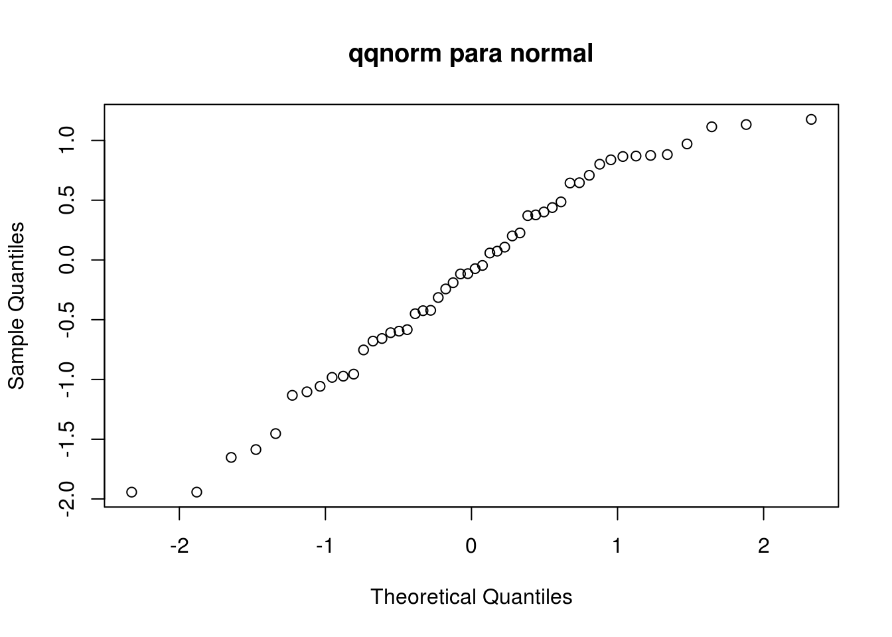

Tema 1 Modelos lineales en regresión
1.1 Regresión lineal
1.1.1 Un ejemplo simple
La regresión lineal simple consiste en aproximar los valores que toman una sucesión \((X_1, Y_1) \dots, (X_n, Y_n)\) independientes pero tal que \(Y_i\) y \(X_i\) son dependientes mediante la siguiente expresión:
\[ y = \beta_{0} + \beta_{1} x + \varepsilon \]
Sea \(g(\beta_0, \beta_1) = \min \sum_{i=1}^{n} \left( y_i - \beta_0 - \beta_1 x_i\right)^{2}\).
La obtención de los \(\beta_i\) se realiza aprovechando la condición necesaria y suficiente de optimalidad:
\[ \frac{\partial}{\partial \beta_0} g(\beta) = \frac{\partial}{\partial \beta_1} g(\beta) = 0 \]
\[\begin{gather*} \left. \begin{aligned} \sum_{i=1}^n (y_i - \beta_0 - \beta_1 x_i) &= 0\\ \sum_{i=1}^n (y_i - \beta_0 - \beta_1 x_i)x_i &= 0 \end{aligned} \right\}\\ \left. \begin{aligned} n \overline{y} - n\beta_0 - n\beta_1 \overline{x} &= 0\\ n \overline{yx} - n\beta_0 \overline{x} - n \beta_1 \overline{x^{2}} &= 0 \end{aligned} \right\}\\ \beta_0 = \overline{y} - \beta_1 \overline{x} \end{gather*}\]\[ \left. \begin{aligned} \quad \overline{y} - \beta_0 - \beta_1 \overline{x} &= 0 \quad (1)\\ \quad \overline{yx}- \beta_0 \overline{x} - \beta_1 \overline{x^{2}} &= 0 \quad (2) \end{aligned} \right\} \]
Si hacemos \((2) - x(1)\), obtenemos \[\begin{gather*} \underbrace{\overline{yx} - \overline{y}\, \overline{x}}_{S_{X,Y}} - \beta_1 \underbrace{\left( \overline{x^{2}} - \overline{x}^{2} \right)}_{S_{X}^{2}} = 0\\ \implies \beta_1 = \frac{S_{X,Y}}{S_{X}^{2}}, \quad \beta_0 = \overline{y} - \frac{S_{X,Y}}{S_{X}^{2}} \overline{x} \end{gather*}\]1.1.2 Modelo lineal
La primera tarea seria de la asignatura es generalizar la idea anterior a un modelo en el que en vez de una sola \(x\) consideramos \(x_1, \dots, x_p\) variables independientes.
\[ y = \beta_0 + \sum_{i=1}^{p} \beta_i x_i + \varepsilon \]
Consideramos que \(\varepsilon_{1}, \dots, \varepsilon_{n}\) son una muestra aleatoria y buscamos un estimador de los parámetros \(\beta_{i}\). Nos plantearemos contrastes de hipótesis para \(H_{0} \colon \beta_{i} = 0\).
1.2 Intervalos de confianza y contrastes de hipótesis en poblaciones normales
Hay que recordar los siguientes resultados:
Si \(Z \sim \Norm{0}{1}\) y \(U \sim \Chisq{n}\), entonces: \[ \frac{Z}{\sqrt{\frac{U}{n}}} \sim \Dt{n} \]
Si \(U_1 \sim \Chisq{n_1}\) y \(U_2 \sim \Chisq{n_2}\), entonces: \[ \frac{U_1/n_1}{U_2/n_2} \sim \DF{n_1}{n_2} \]
Si \(X_1, \dots, X_n \sim \Norm{\mu}{\sigma^2}\), entonces:
\[\begin{align} \overline{X} &\sim \Norm{\mu}{\frac{\sigma^2}{n}}\\ \frac{(n-1) S_C^2}{\sigma^2} &\sim \Chisq{n-1} \end{align}\]Combinando estos resultados se obtienen las cantidades pivotales para calcular intervalos de confianza.
1.3 Tests de bondad de ajuste
1.3.1 Test de Kolmogorov-Smirnov
Sean una fdD \(F^{*}\) conocida y una muestra aleatoria \(X_{1},\dots,X_{n}\) con fdD \(F\) desconocida. Nos planteamos el siguiente contraste de hipótesis:
\[ \begin{cases} H_0: & F = F^{*}\\ H_1: & F \neq F^{*} \end{cases} \]
Sea \(F_n\) la fdD empírica, y \(D_n := \sup_{x} \Abs{F_{n}(x) - F^{*}(x)}\). Rechazaremos \(H_0\) si \(D_n > c\).
Si \(F^{*}\) es absolutamente continua, entonces \[ \sqrt{n} D_{n} \lto \DK \]
donde \(K\) es la distribución de Kolmogorov, con función de distribución \[ F_{K}(x) = 1 - 2 \sum_{k=1}^{\infty} {(-1)^{k-1} e^{-2 k^2 x^2}} I_{(0,+\infty)}(x) \]
No es necesario conocer la función de distribución; solo la propiedad anterior.
Buscamos \(c\) tal que \(\P{D_n > c} \leq \alpha\). \[ \P{D_n > c} = \P{\sqrt{n} D_n > c\sqrt{n}} \approx \P{K > c \sqrt{n}} \]
Por tanto, tenemos \[ c = \frac{1}{\sqrt{n}} F_{K}^{-1}(1-\alpha) \]
R permite realizar tests de Kolmogorov-Smirnov mediante la función ks.test. Veamos un ejemplo:
x = rexp(100,rate=1)
ks.test(x,"pexp",rate=1)##
## One-sample Kolmogorov-Smirnov test
##
## data: x
## D = 0.10758, p-value = 0.1974
## alternative hypothesis: two-sidedks.test(x,"pnorm",mean=0,sd=1)##
## One-sample Kolmogorov-Smirnov test
##
## data: x
## D = 0.50097, p-value < 2.2e-16
## alternative hypothesis: two-sidedComo podemos observar, no podemos rechazar que \(X \sim \DExp{1}\), pero sí rechazamos que \(X \sim \Norm{0}{1}\).
Podemos plantearnos evaluar el \(p\)-valor dependiendo del valor que introduzcamos.
m = rexp(50,1)
rates = seq(0.5,1.5,0.1)
p.val = sapply(rates, function(i) ks.test(m, "pexp", rate=i)$p.value)
plot(rates,p.val,"l")1.3.2 Test de normalidad de Lilliefors
Sea \(X_1, \dots, X_n\) una mas con fdD \(F\). Nos planteamos el siguiente contraste de hipótesis: \[ \begin{cases} H_0: & F \sim \Norm{\cdot}{\cdot}\\ H_1: & F \nsim \Norm{\cdot}{\cdot} \end{cases} \]
El test consiste en construir estimadores \(\widehat{\mu}, \widehat{\sigma^2}\) y buscar un \(c\) adaptado.
La función en R es la siguiente:
library(nortest)
lillie.test(x)1.3.3 Test de Shapiro-Wilk
Sea \(X_1, \dots, X_n\) mas con fdD \(F\) y nos planteamos el mismo contraste de hipótesis. Llamamos \[ W = \frac{ \frac{1}{n-1} \sum_{n=1}^{n} {\left( a_{i}x_{(i)} \right)^{2}} }{S_C^2}, \] con \(a_1, \dots, a_n\) tabulados. Rechazamos \(H_0\) si \(W < c\).
La función en R es shapiro.test()
1.3.4 Q-Q plots
Una forma gráfica de determinar si una muestra es normal consiste en elaborar una gráfica con \(\{(F^{-1}(x_i),F_{n}^{-1}(x_i)) : i \in I\}\) para unos puntos \(x_i\) escogidos.
Para el caso normal, la función en R es qqnorm.
qqnorm(rnorm(50), main="qqnorm para normal")
Como la gráfica está próxima a la bisectriz, aceptamos que es normal.
qqnorm(rexp(50), main="qqnorm para exponencial")Como la gráfica se desvía mucho de la bisectriz, rechazamos que es normal.
Veamos la distribución t de Student.
qqnorm(rt(50, df=1), main=expression(paste("qqnorm para ", t[1])))qqnorm(rt(50,df=10), main=expression(paste("qqnorm para ", t[10])))1.4 Ejercicios
1.4.1 Problema 3
prostate = read.table("prostate.txt", sep=" ")
summary(prostate)## lcavol lweight age lbph
## Min. :-1.3471 Min. :2.375 Min. :41.00 Min. :-1.3863
## 1st Qu.: 0.5128 1st Qu.:3.376 1st Qu.:60.00 1st Qu.:-1.3863
## Median : 1.4469 Median :3.623 Median :65.00 Median : 0.3001
## Mean : 1.3500 Mean :3.629 Mean :63.87 Mean : 0.1004
## 3rd Qu.: 2.1270 3rd Qu.:3.876 3rd Qu.:68.00 3rd Qu.: 1.5581
## Max. : 3.8210 Max. :4.780 Max. :79.00 Max. : 2.3263
## svi lcp gleason pgg45
## Min. :0.0000 Min. :-1.3863 Min. :6.000 Min. : 0.00
## 1st Qu.:0.0000 1st Qu.:-1.3863 1st Qu.:6.000 1st Qu.: 0.00
## Median :0.0000 Median :-0.7985 Median :7.000 Median : 15.00
## Mean :0.2165 Mean :-0.1794 Mean :6.753 Mean : 24.38
## 3rd Qu.:0.0000 3rd Qu.: 1.1787 3rd Qu.:7.000 3rd Qu.: 40.00
## Max. :1.0000 Max. : 2.9042 Max. :9.000 Max. :100.00
## lpsa
## Min. :-0.4308
## 1st Qu.: 1.7317
## Median : 2.5915
## Mean : 2.4784
## 3rd Qu.: 3.0564
## Max. : 5.5829